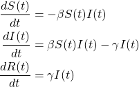
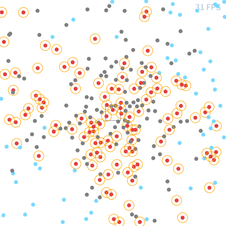
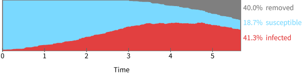
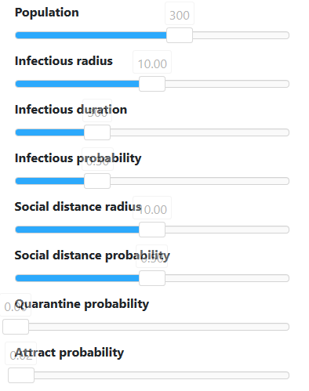

I'm not an epidemiologist.
Neither the simulation nor any content I've shown here isn't necessarily true.
For more detailed and correct information, I strongly suggest you listen to the experts and the medical center.
# SIR model
The statistical behavior of a virus spread can be described using the SIR model.

(Fig.1) SIR model
where S, I, and R represent Susceptible, Infectious, and Removed respectively.
The definitions of these parameters are:
Susceptible
People who are not yet infected. They are also not immune to the virus.
Infectious
People who have been infected. They can transmit the virus to the susceptible.
Removed
People who have been recovered or deceased from the virus. They don't transmit the virus.
These definitions are the same as the ones used in the simulation.
Especially in the simulation, the susceptible people are colored in ■,
the infected in ■ with a circle which indicates infectious radius, and
the removed in ■.
# How Simulation Works
The largest panel (which might look like the following) shows the present situation of the community.

(Fig.2) Distribution of people, FPS, and the Central Spot.
Each point represents an individual.
Again, the color shows the present status of the individual.
The more red the overview is, the more chaos the situation is.
The same goes with the blue, the more blue overview means the situation is well controlled.
The gray rectangle located at the center in the image is "central spot".
It's where people tend to gather such as supermarkets, public transportation, etc.
The top panel shows the changes in the number of Susceptible, Infectious, and Removed.

(Fig.3) Changes in the number of people in each status
The labels on the right-hand side are showing the present situation of the community.
The sliders can change the configuration of the simulation in real-time (except population).

(Fig.4) Range Sliders for the parameters
Label
Description
Population
Number of people in a community including those who are quarantined
Infectious radius
Effective infectious radius from the infected individual
Infectious duration
Duration until people recovers from illness
Infectious probability
Percent of being infected when encountered with an infected individual
Social distance radius
Radius from which people avoid approaching when they're closer
Social distance probability
Percent of all the people pay attention to social distancing
Quarantine probability
Percent of the infected people get quarantined
Attract probability
Percent of all the people gather at the populated spot
(Table.1) Descriptions of each slider
The buttons enable you to control the simulation.
(Fig.5) Buttons
You can Pause when the simulation is running.
You can Reset the simulation at any time.
However, the Play button behaves differently depending on the state of the simulation.
The Play button behaves like:
When the simulation is paused, the Play button will resume the simulation.
When the simulation is stopped, the Play button will reset and restart the simulation.